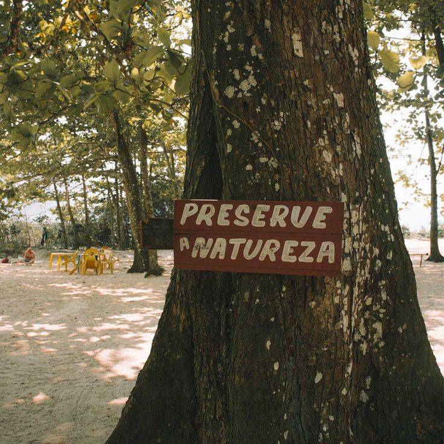

Safra paranaense deve crescer em 2026
O avanço da tecnologia agrícola tem contribuído para o aumento da produtividade da soja no estado.
No Paraná, o plantio de soja começa com a preparação do solo, correção da acidez e adubação. Após o período de vazio sanitário, a semeadura ocorre principalmente entre setembro e novembro. A colheita geralmente acontece entre janeiro e abril.

89
Dias
4
Horas
32
Minutos
05
Segundos
Contagem regressiva para o início do plantio da soja em 10/09/2026.
Drones, sensores, GPS e inteligência artificial ajudam os produtores a monitorar lavouras e aumentar a produtividade.

45%
Propriedades com Tecnologia
0
Hectares Monitorados
30%
Crescimento do Setor
O sistema de plantio direto reduz a erosão do solo, conserva a água e contribui para uma agricultura mais sustentável.

90%
Redução da Erosão
25%
Retenção de Água
0
Dias para o Dia do Meio Ambiente
A Agenda 2030 reúne metas globais para promover o desenvolvimento sustentável e garantir qualidade de vida para as futuras gerações.

17
ODS
2
Fome Zero
0
Dias
0
Horas
0
Minutos
0
Segundos
Contagem regressiva para o prazo final da Agenda 2030 (31/12/2030).
O avanço da tecnologia agrícola tem contribuído para o aumento da produtividade da soja no estado.
Drones, sensores e inteligência artificial ajudam produtores a tomar decisões mais eficientes.
O plantio direto continua sendo uma das principais práticas de conservação do solo no Paraná.